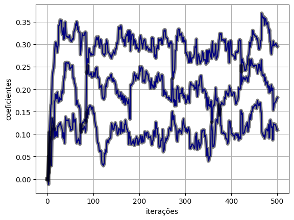
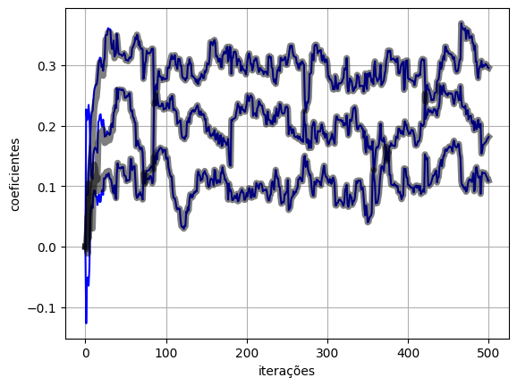

import numpy as np
import torch
import matplotlib.pyplot as plt
from scipy import signal
from torch import nnTópicos sobre o framework PyTorch
No Google Colab, é necessário habilitar o suporte à GPU acessando “Change Runtime Type” e selecionando uma opção com GPU como, por exemplo, a “T4 GPU”.
O PyTorch é um dos frameworks mais utilizados para o treinamento de modelos de aprendizado de máquina. A seguir, são listados os seus principais componentes e é mostrado um exemplo evoluindo de um algoritmo adaptativo implementado em NumPy, incorporando componentes do PyTorch um a um, até chegar em uma implementação clássica do algoritmo usando PyTorch.
Antes disso, vamos carregar as bibliotecas necessárias:
Tensores e operações básicas
Objetos do tipo
torch.Tensor, semelhantes à arrays do NumPy, mas com algumas funções adicionais:- Podem ser alocados facilmente na GPU;
- Possibilidade de cálculo automático de gradientes.
Podem ser criados a partir de listas do Python:
torch.tensor([2, 3, 4])tensor([2, 3, 4])- Atributos de shape e rank semelhantes aos arrays do NumPy:
x = torch.tensor([2, 3, 4])
x.shapetorch.Size([3])x = torch.tensor([[2, 3, 4]])
x.shapetorch.Size([1, 3])- Tipo padrão para representação de ponto flutuante é o
float32:
x = torch.tensor([[2., 3., 4.]])
x.dtypetorch.float32- Funções auxiliares para criação de tensores com zeros, uns, aleatórios e matrizes identidade:
torch.zeros((2, 3))tensor([[0., 0., 0.],
[0., 0., 0.]])torch.ones((3, 2))tensor([[1., 1.],
[1., 1.],
[1., 1.]])torch.rand(2, 2)tensor([[0.1710, 0.2434],
[0.2614, 0.6550]])torch.randn(3, 3)tensor([[ 2.2044, -0.7878, -1.0922],
[ 0.0309, -0.4513, 1.5449],
[ 0.3358, 0.2322, 0.2016]])torch.eye(3)tensor([[1., 0., 0.],
[0., 1., 0.],
[0., 0., 1.]])- Funções auxiliares para criação de sequências:
torch.linspace(0, 1, 10)tensor([0.0000, 0.1111, 0.2222, 0.3333, 0.4444, 0.5556, 0.6667, 0.7778, 0.8889,
1.0000])torch.arange(10)tensor([0, 1, 2, 3, 4, 5, 6, 7, 8, 9])reshapeeview: são semelhantes, masviewusa os mesmos dados do tensor original. Não funciona para o caso de dados não contíguos;reshapetenta fazer o mesmo queview, mas no caso de dados não contíguos, retorna um tensor com uma cópia dos dados originais.
- A sugestão é usar sempre
view; - Ref.: https://stackoverflow.com/questions/49643225/whats-the-difference-between-reshape-and-view-in-pytorch
x = torch.rand(4,3)
xtensor([[0.1625, 0.3299, 0.0073],
[0.2945, 0.8182, 0.0982],
[0.6897, 0.5476, 0.5530],
[0.8207, 0.0292, 0.2640]])x.view(12, -1)tensor([[0.1625],
[0.3299],
[0.0073],
[0.2945],
[0.8182],
[0.0982],
[0.6897],
[0.5476],
[0.5530],
[0.8207],
[0.0292],
[0.2640]])x.reshape(12, -1)tensor([[0.1625],
[0.3299],
[0.0073],
[0.2945],
[0.8182],
[0.0982],
[0.6897],
[0.5476],
[0.5530],
[0.8207],
[0.0292],
[0.2640]])Operações
- Operações aritméticas e matriciais semelhantes às do NumPy;
- PyTorch disponibiliza diversas operações ponto a ponto como
torch.abs()etorch.cos()e diversas operações de redução comotorch.sum()etorch.mean(); - É importante utilizar as operações do PyTorch para processar os tensores, para que seja possível calcular o gradiente automaticamente com o autograd;
- Além disso, há diversas operações de comparação, espectrais e outras.
- Referência: https://pytorch.org/docs/stable/torch.html#math-operations
Alocação em CPU e em GPU
- Atributo
is_cudapermite ver se o tensor está alocado na GPU:
x = torch.Tensor([1, 2, 3])x.is_cudaFalse- Para alocar na GPU, é necessário criar um objeto device e usar o método
.to():
device = torch.device("cuda")
x = x.to(device)x.is_cudaTrue- É possível ver se há GPU disponível com o método
torch.cuda.is_available():
torch.cuda.is_available() True- É usual usar a seguinte estrutura para alocação automática de tensores na GPU, quando disponível:
device = torch.device("cuda:0" if torch.cuda.is_available() else "cpu")
x = x.to(device)- Para trazer realocar um tensor de volta à CPU, pode-se usar
.cpu():
x.is_cudaTruex = x.cpu()x.is_cudaFalse- O método
.to()também é usado para fazer casting de tensores:
x.dtypetorch.float32y = x.to(torch.float64)
y.dtypetorch.float64Conversão de dados para NumPy e vice-versa
- Um tensor do PyTorch pode ser convertido para um array do NumPy usando o método
.numpy():
x = torch.randn(5,5)
xtensor([[ 0.0226, 1.1913, 0.9024, 0.1993, 1.4604],
[ 0.4746, -0.0730, -0.3775, -0.3115, 0.0461],
[-0.1660, 0.2899, 1.5823, -0.0143, 1.0010],
[ 1.3880, -0.7835, 1.2934, -1.7216, -0.3019],
[ 1.1091, 0.1235, -0.8572, 0.1827, -1.4729]])x.dtypetorch.float32x_np = x.numpy()
x_nparray([[ 0.02260382, 1.1912687 , 0.902434 , 0.19927278, 1.4604093 ],
[ 0.4746041 , -0.0730461 , -0.3775207 , -0.31152746, 0.04614168],
[-0.16600847, 0.28993207, 1.5822891 , -0.01425551, 1.0010148 ],
[ 1.3880016 , -0.7835027 , 1.2933816 , -1.7216129 , -0.30192617],
[ 1.1091497 , 0.12347655, -0.8571574 , 0.18268453, -1.4728575 ]],
dtype=float32)x_np.dtypedtype('float32')torch.Tensorpode criar um tensor PyTorch a partir de um array do NumPy, mas é necessário atenção à precisão numérica:
x_np = np.random.randn(5,5)
x_nparray([[-1.15333332, -1.68247501, 0.26655873, 1.01178785, -0.87462355],
[-1.6621385 , 0.21882814, 0.12260001, 0.50508408, 0.44652293],
[-1.14593503, -0.42022754, -0.63663901, -0.32429263, 1.12014158],
[ 1.07981783, 0.69727713, 0.08246118, -1.24697262, 1.4056202 ],
[ 0.56203902, 0.69106794, 0.31189597, 0.24461639, -0.62747763]])x_np.dtypedtype('float64')x = torch.Tensor(x_np,)
xtensor([[-1.1533, -1.6825, 0.2666, 1.0118, -0.8746],
[-1.6621, 0.2188, 0.1226, 0.5051, 0.4465],
[-1.1459, -0.4202, -0.6366, -0.3243, 1.1201],
[ 1.0798, 0.6973, 0.0825, -1.2470, 1.4056],
[ 0.5620, 0.6911, 0.3119, 0.2446, -0.6275]])x.dtypetorch.float32- A função
torch.from_numpypreserva o tipo do array NumPy:
x2 = torch.from_numpy(x_np)
x2.dtypetorch.float64Autograd
- Tensores com o atributo
requires_grad=Truetêm o gradiente calculado automaticamente; - Só vetores do tipo
floatoucomplexpodem usarrequires_grad=True.
x0 = torch.tensor([1., 2., 3.], requires_grad=True)
x0tensor([1., 2., 3.], requires_grad=True)x1 = torch.tensor([4., 5., 6.], requires_grad=True)
x1tensor([4., 5., 6.], requires_grad=True)- Tensores criados a partir de outros com
requires_grad=Truetambém têmrequires_grad=True:
f = torch.sum(x0**2 + x1)f.requires_gradTrue- Tensores criados pelo usuário são leaf nodes no grafo, identificados pelo atributo
is_leaf:
x0.is_leafTruex1.is_leafTruef.is_leafFalse- Gradiente de
fem relaçãox0ex1:
\[ \frac{\partial f}{\partial \mathbf{x}} = \left[ \begin{matrix} \frac{\partial f}{\partial x_0}\\ \frac{\partial f}{\partial x_1}\\ \end{matrix} \right] = \left[ \begin{matrix} 2x_0\\ 1\\ \end{matrix} \right] \]
- Os gradientes são armazenados no atributo
grad, inicialmente igual aNone:
x0.grad is NoneTruex1.grad is NoneTrue- Para que os gradientes sejam calculados, é necessário executar o método
.backward()do nó em relação ao qual se deseja calculá-los:
f.backward()x0.gradtensor([2., 4., 6.])x0tensor([1., 2., 3.], requires_grad=True)x1.gradtensor([1., 1., 1.])x1tensor([4., 5., 6.], requires_grad=True)Do NumPy ao PyTorch
A seguir, serão apresentados os principais elementos do PyTorch, partindo de um exemplo de treinamento de um modelo com o LMS implementado com o NumPy. Serão abordados:
- Uso de tensores PyTorch;
- Uso do autograd;
- Blocos para função custo;
- Blocos para otimizadores;
- Uso de objetos representando modelos PyTorch;
- Uso de blocos PyTorch para a composição de modelos.
As mudanças no código serão indicadas por comentários.
Começando pelo NumPy
- Código para treinamento de um modelo com o LMS para identificação de sistemas:
N = 500
M = 3
sigmav2 = 0.01
eta = 0.1
x = np.random.randn(N, 1)
wo = np.array([[0.1, 0.2, 0.3]])
d = signal.lfilter(wo.squeeze(), 1, x.squeeze()) + np.sqrt(sigmav2) * np.random.randn(N)
d = d.reshape(-1, 1)def lms(x, d, eta, M):
N = len(x)
xM = np.zeros((M, 1))
wi = np.zeros((1, M))
y = np.zeros((N, 1))
e = np.zeros((N, 1))
w = np.zeros((N + 1, M))
for i in range(N):
xM = np.vstack((x[i : i + 1, [0]], xM[0 : M - 1, [0]]))
yi = wi @ xM
ei = d[i] - yi
wi = wi + eta/2 * 2 * ei * xM.T
y[i] = yi
e[i] = ei
w[i + 1, :] = wi
return y, e, w(y_lms, e_lms, w_lms) = lms(x, d, eta, M)- Vamos comparar a evolução dos pesos, usando a seguinte função:
def plot_ws(w, w_lms):
plt.figure()
plt.plot(w, "b")
plt.plot(w_lms, "k", linewidth=5, alpha=0.5)
plt.xlabel("iterações")
plt.ylabel("coeficientes")
plt.grid()plot_ws(w_lms, w_lms)
Uso de tensores PyTorch
- Para manter a precisão numérica padrão do NumPy, vamos configurar o PyTorch para usar tensores do tipo
float64:
torch.set_default_dtype(torch.float64)- A forma de uso dos tensores PyTorch é bem semelhante à dos arrays NumPy. Na maioria dos casos, basta trocar a chamada
np.portorch.:
x = torch.tensor(x)
wo = torch.tensor(wo)
d = torch.tensor(d)def lms_torch(x, d, eta, M):
N = len(x)
# xM = np.zeros((M, 1))
# wi = np.zeros((1, M))
# y = np.zeros((N, 1))
# e = np.zeros((N, 1))
# w = np.zeros((N + 1, M))
xM = torch.zeros((M, 1))
wi = torch.zeros((1, M))
y = torch.zeros((N, 1))
e = torch.zeros((N, 1))
w = torch.zeros(N + 1, M)
for i in range(N):
# xM = np.vstack((x[i : i + 1, [0]], xM[0 : M - 1, [0]]))
xM = torch.vstack((x[i : i + 1, [0]], xM[0 : M - 1, [0]]))
yi = wi @ xM
ei = d[i] - yi
wi = wi + eta/2 * 2 * ei * xM.T
y[i] = yi
e[i] = ei
w[i + 1, :] = wi
return y, e, w(y_torch, e_torch, w_torch) = lms_torch(x, d, eta, M)plot_ws(w_torch.numpy(), w_lms)
Uso do autograd
- Tensores que necessitam do cálculo do gradiente, devem ter o atributo
requires_grad=True; - Gradientes são calculados utilizando o método
.backward()chamado no objeto que representa o nó em relação ao qual desejamos calcular os gradientes; - É necessário tomar cuidado com operações para as quais não queremos calcular o gradiente. Nesses casos, utilizamos o bloco de contexto
with torch.no_grad():; - Note que é importante não sobrescrever o objeto
wipara que os gradientes sejam computados corretamente (uso dewi[:] = (...)); - A cada chamada de
.backward(), os valores dos gradientes são acumulados nos atributos.gradde cada parâmetro do modelo;- Dessa forma, é necessário zerar os gradientes a cada iteração, usando o método
.grad.zero_().
- Dessa forma, é necessário zerar os gradientes a cada iteração, usando o método
def lms_torch_autograd(x, d, eta, M):
N = len(x)
xM = torch.zeros((M, 1))
# wi = torch.zeros((1, M))
wi = torch.zeros((1, M), requires_grad=True)
y = torch.zeros((N, 1))
e = torch.zeros((N, 1))
w = torch.zeros(N + 1, M)
for i in range(N):
xM = torch.vstack((x[i : i + 1, [0]], xM[0 : M - 1, [0]]))
yi = wi @ xM
ei = d[i] - yi
# Novo
mse = ei**2
mse.backward()
# wi = wi + eta/2 * 2 * ei * xM.T
# y[i] = yi
# e[i] = ei
# w[i + 1, :] = wi
with torch.no_grad():
wi[:] = wi[:] - eta/2 * wi.grad
y[i] = yi
e[i] = ei
w[i + 1, :] = wi
# Novo
wi.grad.zero_()
return y, e, w(y_torch_autograd, e_torch_autograd, w_torch_autograd) = lms_torch_autograd(x, d, eta, M)plot_ws(w_torch_autograd.numpy(), w_lms)
Blocos para função custo
- O PyTorch disponibiliza diversos blocos para a representação de funções custo: https://pytorch.org/docs/stable/nn.html#loss-functions;
- Para o caso da função custo MSE, utilizamos o bloco
nn.MSELoss.
def lms_torch_loss(x, d, eta, M):
N = len(x)
xM = torch.zeros((M, 1))
wi = torch.zeros((1, M), requires_grad=True)
y = torch.zeros((N, 1))
#e = torch.zeros((N, 1))
losses = torch.zeros((N, 1))
w = torch.zeros(N + 1, M)
# Novo
loss_function = nn.MSELoss()
for i in range(N):
xM = torch.vstack((x[i : i + 1, [0]], xM[0 : M - 1, [0]]))
yi = wi @ xM
#ei = d[i] - yi
#mse = ei**2
#mse.backward()
loss = loss_function(yi.squeeze(), d[i].squeeze())
loss.backward()
with torch.no_grad():
wi[:] = wi[:] - eta/2 * wi.grad
y[i] = yi
losses[i] = loss
w[i + 1, :] = wi
wi.grad.zero_()
return y, loss, w(y_torch_loss, e_torch_loss, w_torch_loss) = lms_torch_loss(x, d, eta, M)plot_ws(w_torch_loss.numpy(), w_lms)
Blocos para otimizadores
- O PyTorch disponibiliza diversos blocos para a representação de otimizadores: https://pytorch.org/docs/stable/optim.html#algorithms;
- Para o caso do otimizador com o algoritmo backpropagation tradicional, chamado de Stochastic Gradient Descent, utilizamos o bloco
nn.SGD; - A atualização dos pesos do otimizador é feita chamando o método
.step().
def lms_torch_optim(x, d, eta, M):
N = len(x)
xM = torch.zeros((M, 1))
wi = torch.zeros((1, M), requires_grad=True)
y = torch.zeros((N, 1))
losses = torch.zeros((N, 1))
w = torch.zeros(N + 1, M)
loss_function = nn.MSELoss()
# Novo
optimizer = torch.optim.SGD([wi], lr=eta/2)
for i in range(N):
xM = torch.vstack((x[i : i + 1, [0]], xM[0 : M - 1, [0]]))
yi = wi @ xM
loss = loss_function(yi.squeeze(), d[i].squeeze())
loss.backward()
# Novo
optimizer.step()
with torch.no_grad():
# wi[:] = wi[:] - eta/2 * wi.grad
y[i] = yi
losses[i] = loss
w[i + 1, :] = wi
wi.grad.zero_()
return y, loss, w(y_torch_optim, e_torch_optim, w_torch_optim) = lms_torch_optim(x, d, eta, M)plot_ws(w_torch_optim.numpy(), w_lms)
Uso de objetos representando modelos PyTorch
- Os modelos PyTorch são construídos com a definição de classes que herdam de
nn.module; - No método
__init__(), devem ser criados os elementos que compõem o modelo. Nesse caso, vamos utilizar apenas um objeto representando parâmetros genéricos; - O método
forward()define como é calculada a saída a partir da entrada, nesse caso chamada dexM; - Após a criação da classe, instancia-se um objeto para representar o modelo;
- A saída do modelo é calculada utilizando este objeto.
- Assim como feito anteriormente, é necessário zerar os gradientes do modelo a cada iteração;
- É usual fazer isso no início do loop de treinamento.
# Novo
class LMS(nn.Module):
def __init__(self):
super().__init__()
self.wi = nn.Parameter(torch.zeros((1, M), requires_grad=True))
def forward(self, xM):
output = self.wi @ xM
return output
# Novo
model = LMS()
# def lms_torch_optim(x, d, eta, M):
def lms_torch_model(x, d, eta, M, model):
N = len(x)
xM = torch.zeros((M, 1))
# wi = torch.zeros((1, M), requires_grad=True)
y = torch.zeros((N, 1))
losses = torch.zeros((N, 1))
w = torch.zeros(N + 1, M)
loss_function = nn.MSELoss()
#optimizer = torch.optim.SGD([wi], lr=eta/2)
optimizer = torch.optim.SGD(model.parameters(), lr=eta/2)
for i in range(N):
xM = torch.vstack((x[i : i + 1, [0]], xM[0 : M - 1, [0]]))
# yi = wi @ xM
model.zero_grad()
yi = model(xM)
loss = loss_function(yi.squeeze(), d[i].squeeze())
loss.backward()
optimizer.step()
with torch.no_grad():
y[i] = yi
losses[i] = loss
# w[i + 1, :] = wi
w[i + 1, :] = model.wi.clone()
# wi.grad.zero_()
return y, loss, w(y_torch_model, e_torch_model, w_torch_model) = lms_torch_model(x, d, eta, M, model)plot_ws(w_torch_model.numpy(), w_lms)
Uso de blocos PyTorch para a composição de modelos
- No último exemplo, construímos um modelo PyTorch baseado em um conjunto de parâmetros configurados com
nn.Parameter.- No entanto, o PyTorch conta com inúmeros blocos para a composição de modelos como blocos lineares e funções de ativação para a composição de camadas de redes MLP;
- Ref.: https://pytorch.org/docs/stable/nn.html.
- No caso do LMS, podemos utilizar o bloco
nn.Linear.
# class LMS(nn.Module):
# def __init__(self):
# super().__init__()
# self.wi = nn.Parameter(torch.zeros((1, M), requires_grad=True))
# def forward(self, xM):
# output = self.wi @ xM
# return output
class LMS(nn.Module):
def __init__(self):
super().__init__()
self.l1 = nn.Linear(M, 1, bias=False)
def forward(self, x):
output = self.l1(x.squeeze())
return output
model = LMS()
def lms_torch_model_2(x, d, eta, M, model):
N = len(x)
xM = torch.zeros((M, 1))
y = torch.zeros((N, 1))
losses = torch.zeros((N, 1))
w = torch.zeros(N + 1, M)
loss_function = nn.MSELoss()
optimizer = torch.optim.SGD(model.parameters(), lr=eta/2)
for i in range(N):
xM = torch.vstack((x[i : i + 1, [0]], xM[0 : M - 1, [0]]))
model.zero_grad()
yi = model(xM)
loss = loss_function(yi.squeeze(), d[i].squeeze())
loss.backward()
optimizer.step()
with torch.no_grad():
y[i] = yi
losses[i] = loss
# w[i + 1, :] = model.wi.clone()
w[i + 1, :] = model.l1.weight.clone()
return y, loss, w(y_torch_model_2, e_torch_model_2, w_torch_model_2) = lms_torch_model_2(x, d, eta, M, model)plot_ws(w_torch_model_2.numpy(), w_lms)
- As curvas de evolução dos pesos não coincidem com as anteriores, neste caso.
- Isso ocorre por conta da inicialialização dos pesos utilizada pelo bloco
nn.Linearque não são inicializados com zeros, conforme descrito na documentação.
- Isso ocorre por conta da inicialialização dos pesos utilizada pelo bloco
- Para obter o mesmo comportamento, é necessário inicializar os pesos com zeros:
class LMS(nn.Module):
def __init__(self):
super().__init__()
self.l1 = nn.Linear(M, 1, bias=False)
def forward(self, x):
output = self.l1(x.squeeze())
return output
# Novo
def weights_init(m):
classname = m.__class__.__name__
if classname.find('Linear') != -1:
if m.weight is not None:
#torch.nn.init.xavier_normal_(m.weight)
torch.nn.init.zeros_(m.weight)
if m.bias is not None:
torch.nn.init.zeros_(m.bias)
model = LMS()
# Novo
model.apply(weights_init)
def lms_torch_model_3(x, d, eta, M, model):
N = len(x)
xM = torch.zeros((M, 1))
y = torch.zeros((N, 1))
losses = torch.zeros((N, 1))
w = torch.zeros(N + 1, M)
loss_function = nn.MSELoss()
optimizer = torch.optim.SGD(model.parameters(), lr=eta/2)
for i in range(N):
xM = torch.vstack((x[i : i + 1, [0]], xM[0 : M - 1, [0]]))
model.zero_grad()
yi = model(xM)
loss = loss_function(yi.squeeze(), d[i].squeeze())
loss.backward()
optimizer.step()
with torch.no_grad():
y[i] = yi
losses[i] = loss
w[i + 1, :] = model.l1.weight.clone()
return y, loss, w(y_torch_model_3, e_torch_model_3, w_torch_model_3) = lms_torch_model_3(x, d, eta, M, model)plot_ws(w_torch_model_3.numpy(), w_lms)